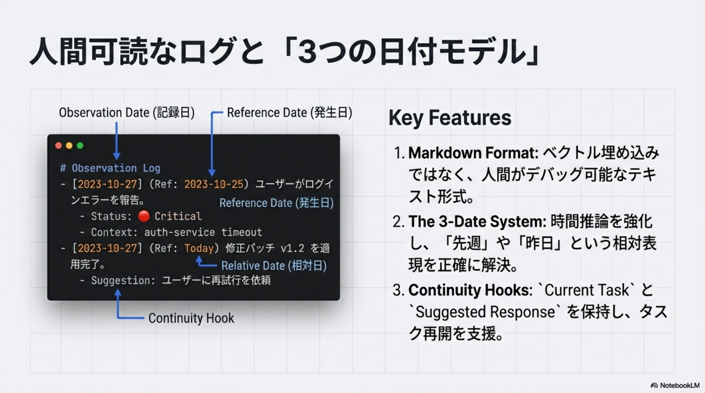
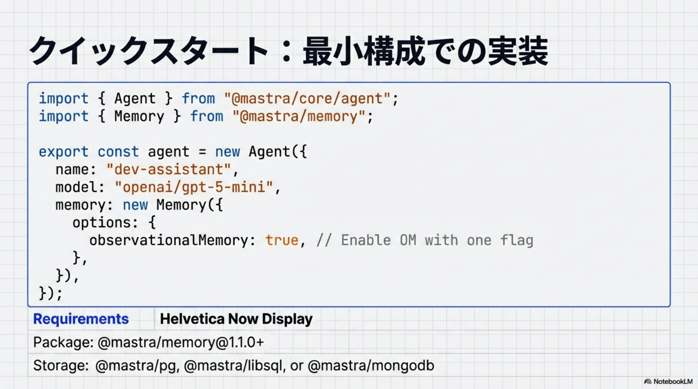
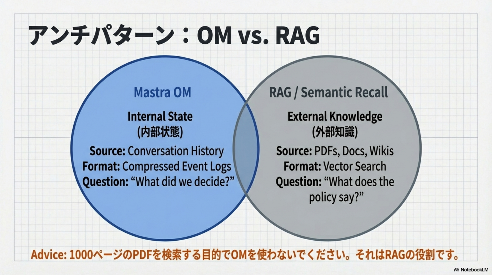

概要
最高スコア
キャッシュ効率
生/観察/反省
Observer & Reflector
3層メモリ・アーキテクチャ
Level 1: Reflections
反省・再編
長期的・包括的な知恵。Reflectorが再構成した世代（Generation）
Level 2: Observations
観察ログ
イベント単位の時系列ログ。Observerによって圧縮・要約された記録
Level 3: Recent Messages
生メッセージ
直近の会話や作業に必要な「忠実な」履歴。未圧縮のRawデータ
記憶をメンテナンスする2つのエージェント
👁 The Observer（観察者）
- Trigger: 未処理メッセージ > 30,000 tokens
- Action: 生メッセージを圧縮し「イベントログ」として追記
- 古い生メッセージを破棄してトークンを節約
💎 The Reflector（反省者）
- Trigger: 観察ログ > 40,000 tokens
- Action: ログ全体を読み込み、再編・圧縮して情報の密度を高める
- デフォルトでgemini-2.5-flashを使用しコストを最小化
人間可読なログと「3つの日付モデル」

📅 Key Features
1. Markdown Format: ベクトル埋め込みではなく、人間がデバッグ可能なテキスト形式。
2. The 3-Date System: 時間推論を強化し、「先週」や「昨日」という相対表現を正確に解決。
3. Continuity Hooks: Current TaskとSuggested Responseを保持し、タスク再開を支援。
経済的エンジン：プロンプトキャッシュ戦略
(GPT-5-mini)
(GPT-4o)
/ Oracle Baseline
Stable Prefix
クイックスタート & 設定

💻 最小構成での実装
@mastra/memory@1.1.0+ をインストールし、observationalMemory: true を1行追加するだけで有効化。
ストレージは @mastra/pg、@mastra/libsql、@mastra/mongodb に対応。
✅ Thread Scope（推奨）
- スレッド（会話）単位で記憶を隔離
- 安定性が高く、高速でコンテキストの混線がない
- ほとんどのユースケースに最適
⚠️ Resource Scope（実験的）
- ユーザー単位で全スレッドの記憶を共有
- 処理が重く、文脈が混ざるリスクあり
- 明確な理由がない限りThreadを使用
最適なユースケース
長期プロジェクト伴走
数週間にわたる開発仕様、既知のバグ、決定事項を維持する
ツール多用型エージェント
PlaywrightやMCPの大量のログ出力を5~40倍に圧縮して「意味」だけを残す
カスタマーサポート
「昨日言ったこと」と矛盾しない一貫したペルソナ維持
アンチパターン：OM vs. RAG

⚖️ 使い分けの鍵
Mastra OM: 内部状態（Internal State）。会話履歴の圧縮イベントログ。「何を決めたか？」
RAG: 外部知識（External Knowledge）。PDFs、Docs、Wikis。「ポリシーには何と書いてあるか？」
1000ページのPDFを検索する目的でOMを使わないでください。それはRAGの役割です。
Mastra OMの導入効果まとめ
Architecture
3層構造（生/観察/反省）による効率的な記憶管理
Performance
安定したPrefixによるキャッシュヒット率向上とコスト削減
UX
Async Bufferingによる高速なレスポンス（Zero Latency）
Accuracy
3つの日付モデルによる高精度な時系列推論（~95%）